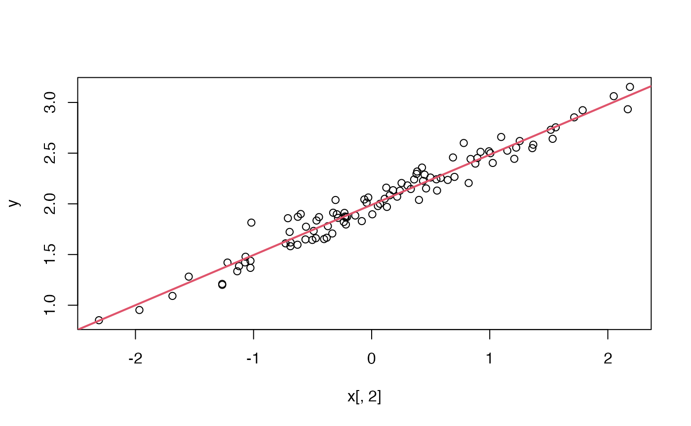

We walk through the basics of litr with a simple
example.
Suppose we want to create a package called rleastsquares
that does least squares. To do so, we will create a .Rmd file called
create-rleastsquares.Rmd from a litr
template:
litr::draft("rleastsquares")This generates create-rleastsquares.Rmd, and opening it
you’ll notice some special lines in the yaml:
knit: litr::render
output: litr::litr_html_document
params:
package_name: "rleastsquares" # <-- change this to your package name
package_parent_dir: "." # <-- relative to this file's locationThis is what will lead to an R package being created when you press “Knit”.
Package setup
Note: Every R package needs a DESCRIPTION file. We’ll start by filling in the relevant information.
usethis::create_package(
path = ".",
fields = list(
Package = param$package_name,
Version = "0.0.0.9000",
Title = "Fit Least Squares",
Description = "A package that fits least squares.",
`Authors@R` = person(
given = "First",
family = "Last",
email = "you@gmail.com",
role = c("aut", "cre")
)
)
)
usethis::use_mit_license(copyright_holder = "F. Last")Writing a function for the package
Since this is an R markdown file, we can use latex to explain our code, provide derivations, etc.
Suppose we have a response vector and a data matrix .
We want to find the solution to the problem
We’ll assume that is full rank with . We know that the solution is given by
We’ll write a function that does exactly that!
#' Get the OLS solution
#'
#' @param y our response, which is an n-vector
#' @param X our data matrix, which is n by p
#' @export
do_least_squares <- function(y, X) {
if(nrow(X) != length(y))
stop("The number of rows of X must match the length of y.")
as.numeric(solve(crossprod(X), crossprod(X, y)))
}Note: Code chunks whose first line starts with
#'are added to the package. If you’re not familiar withroxygen2, see here for more.
Now that we’ve defined do_least_squares(), let’s try it
out!
set.seed(123)
n <- 100
p <- 1
x <- cbind(1, matrix(rnorm(n*p), n, p))
beta_star <- c(2, 0.5)
sigma <- 0.1
y <- x %*% beta_star + sigma * rnorm(n)Note: This code chunk does not start with
#', so it is not added to the package.
betahat <- do_least_squares(y, x)
Let’s see how this compares to lm’s answer.
fit_lm <- lm(y ~ x[, 2])
fit_lm$coefficients## (Intercept) x[, 2]
## 1.9897197 0.4947528Compare that to…
betahat## [1] 1.9897197 0.4947528Ok, do_least_squares() appears to be working. Let’s
define a formal unit test based on the example above.
testthat::test_that("do_least_squares() works", {
set.seed(123)
n <- 100
p <- 1
x <- cbind(1, matrix(rnorm(n*p), n, p))
beta_star <- c(2, 0.5)
sigma <- 0.1
y <- x %*% beta_star + sigma * rnorm(n)
fit_lm <- lm(y ~ x[, 2])
# do lm and our function give the same coefficient vector?
testthat::expect_equal(do_least_squares(y, x),
as.numeric(fit_lm$coefficients))
# do we get the desired error when there is a length mismatch?
testthat::expect_error(do_least_squares(y[-1], x), "must match")
})## Test passed 🎊Note: Code chunks that have one or more lines starting with
test_that(ortestthat::test_that(are added to the package as tests.
Some fancier features
Finer control over where in the package your code is sent
As noted above, litr detects whether to send a code
chunk to the package based on whether it starts with #' or
has test_that in it. However, sometimes you’ll want finer
control. In this case you can override the behavior by explicitly
specifying the target location. To do so, use a code chunk option of the
form send_to="R/myfile.R". This will add your code to that
particular file (either creating it if need be or else appending it).
There are two primary use cases for this feature: (a) when you don’t
want to use roxygen2 to document a function and (b) when
you want several functions to appear together in the same .R file.
Using a function from a different package
Imagine we wanted to actually use a function from another package in
our own. For example, perhaps we want to use lsfit() from
the stats package:
#' Get the OLS solution using lsfit()
#'
#' @param y our response, which is an n-vector
#' @param X our data matrix, which is n by p
#' @export
do_least_squares_with_lsfit <- function(y, X) {
fit <- stats::lsfit(x = X, y = y, intercept = FALSE)
return(as.numeric(fit$coefficients))
}And then we also update the DESCRIPTION file with this package dependence:
usethis::use_package("stats")To use a function from another package, simply use the
pkg::prefix when calling it and then addusethis::use_package("pkg")to include the package dependency.
Including a dataset in your package
There’s a template for that.
Using Rcpp in your package
There’s a template for that.
Including a README, vignettes, and pkgdown site
There’s a template for that.
Defining your package with bookdown
If you’re writing a large package, it may be convenient to define it
across multiple .Rmd files. You can use bookdown for this,
which leads to a nice looking online book with multiple chapters.
There’s a template for that.
Documenting the package
At the end of a litr document, it is important to call
litr::document(), which turns the royxgen2
into traditional documentation files in our R package.
litr::document() # <-- use instead of devtools::document()